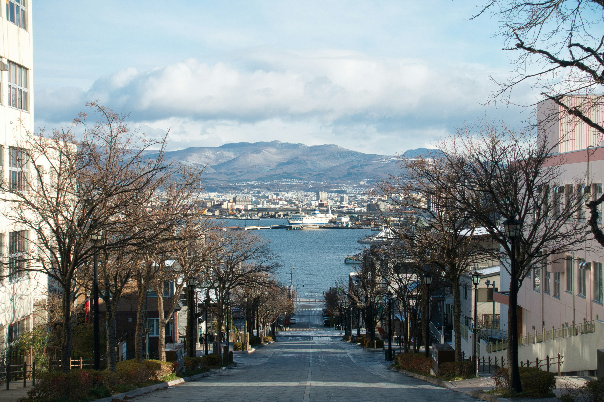
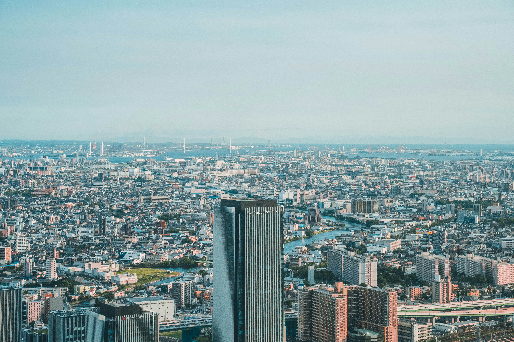
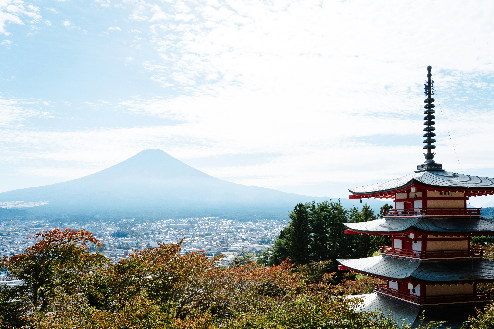

// HIGHLIGHTED CONTENT

Hokkaido
Hokkaido is the second-largest and northernmost of Japan's four main islands. Together with its surrounding islands, it comprises the largest and northernmost prefecture, making up its own region. Hokkaido's position on the northern end of the Japanese archipelago results in a colder climate, with the island seeing significant snowfall each winter.

Aichi
Aichi Prefecture (愛知県, Aichi-ken) is a prefecture of Japan located in the Chūbu region of Honshū. Aichi Prefecture is home to the Toyota Motor Corporation. Aichi Prefecture had many locations with the Higashiyama Zoo and Botanical Gardens, the Chubu Centrair International Airport, and the Legoland Japan Resort.

Enoshima
Enoshima (Japanese: 江の島) is a small offshore island, about 4 km (2.5 mi) in circumference, at the mouth of the Katase River which flows into the Sagami Bay of Kanagawa Prefecture. Home to some of the closest sandy beaches to Tokyo and Yokohama, the island and adjacent coastline are the hub of a local resort area.
